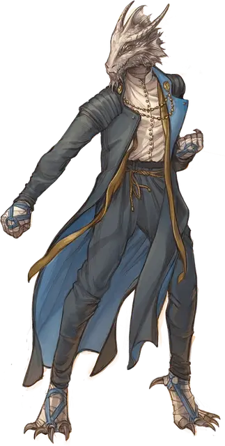

Монах оперативник
Monastic Operative
Маленький или Средний Гуманоид (Монах), любое мировоззрение

Класс Доспеха 17 (защита без доспехов)
Хиты 84 (13к8 + 26)
Скорость 40 футов
| мод | спас | ||
|---|---|---|---|
| СИЛ | 13 | +1 | +1 |
| ЛОВ | 18 | +4 | +7 |
| ТЕЛ | 14 | +2 | +2 |
| мод | спас | ||
|---|---|---|---|
| ИНТ | 14 | +2 | +2 |
| МДР | 17 | +3 | +6 |
| ХАР | 11 | +0 | +0 |
Навыки Акробатика +7, Проницательность +6, Расследование +8, Скрытность +7
Иммунитет к состояниям очарование
Чувства пассивное Восприятие 13
Языки Общий
Опасность 5 (1800 опыта)
Бонус мастерства +3
Особенности
Языки. Знает Общий и ещё два языка.
Защита без доспехов. Пока оперативник не носит ни доспехи, ни щит, к КД прибавляется его модификатор Мудрости.
Действия
Мультиатака. Оперативник совершает три безоружных удара, три атаки Кобальтовым дротиком или любую комбинацию из вышеперечисленного.
Безоружный удар. Рукопашная атака оружием: +7 к попаданию, досягаемость 5 футов, одна цель. Попадание: 9 (1к10 + 4) дробящего урона.
Кобальтовый дротик. . Дальнобойная атака оружием: +7 к попаданию, дистанция 20/60 футов, одна цель. Попадание: 6 (1к4 + 4) колющего урона плюс 3 (1к6) урона силовым полем.
Реакции
Ответный удар. Когда существо в пределах 5 футов от оперативника попадает или промахивается по оперативнику рукопашной атакой, оперативник наносит один безоружный удар по атакующему.
Описание
Оперативники - это агенты организаций, которые занимаются шпионажем. Лучшие из них часто рассматриваются для заполнения вакансий на более высоких должностях.
Монахи кобальтовой души
Ученые, священники и послушники, привлеченные к проблеме постижения истины и знаний, проводят свою жизнь в поддержке Библиотеки Кобальтовой души, объединенной учением Знающей Наставницы Айюн. Кобальтовые души руководствуются главным убеждением в том, что истинная сила приходит от понимания окружающего мира. Помимо своих усилий в поиске знаний, каждое ответвление Кобальтовой души стремится разоблачать ложь, разоблачать пропаганду и бороться с коррупцией в любом обществе, которое их отделение, называемое архивом, называет домом.
Штаб-квартира Библиотеки Кобальтовой души находится в Рексентруме, столице Двендалийской империи на континенте Дикогорье. У организации есть архивы по всей Экзандрии. Анк'Харелийская ветвь Кобальтовой души базируется в Храме Наставника. Как и многие архивы, Храм Наставницы - это одновременно и обширная библиотека, и святилище Айюн. Этим маркетским архивом руководит верховный хранитель Джамиль А'Алития.